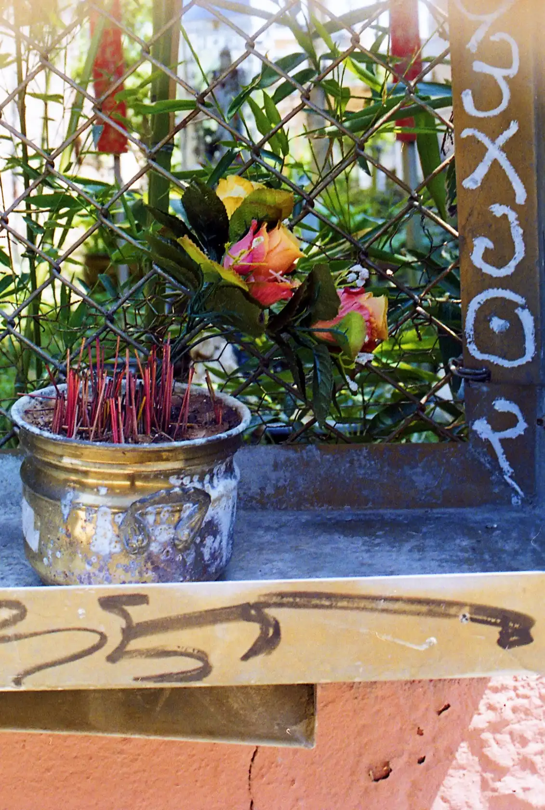
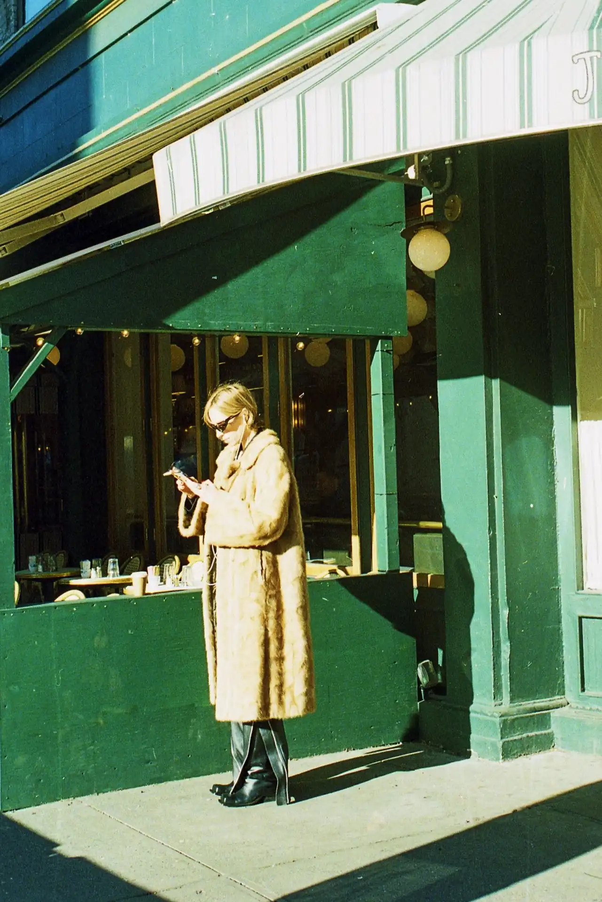

Hi, I’m Essë (they/she). I am an artist, photographer, and web developer based in Philadelphia.
The photos in my Gallery are home processed film photographs. Please see my Dev Guides to learn more about my processes.
I have been developing black and white film at home for a year, and have been developing color negative film (C-41) at home for the last few months. The photos in my Gallery are photos I developed at home. I'll share what I have learned so far below. I am still learning and my processes are still evolving, so please consider these guides to be a constant work in progress that I plan to continue updating. If you have tips, suggestions, or questions, please reach out via instagram, I would love to hear from you.
There is a lot of overlap between the steps for color negative (C-41) and 3-step black and white negative development. If you can do one, you can do the other. And if you already do one, you probably have most of the equipment you need to do the other. From my experience, the biggest differences between C-41 and 3-step B&W are 1) temperature (C-41 at 102°F; B&W at 68°F) and 2) reuse (C-41) vs. one-time use (B&W) of chemicals. Once you mix the C-41 chemicals, you will reuse them for about 20 rolls of film over about a month (realistically, I stretch them for longer than this). You won't throw them away each time as with the 3-step B&W process. This saves time in not having to measure and mix the chemicals with each round of development, but you do have to keep careful track the total number of rolls that you have processed with color development. The chemicals weaken as you continue to reuse them, so you have to calculate a new (and longer) development time each time you develop new rolls of film.
Spooling the film and loading it into the tank happens in complete darkness. I recommend reading steps 5 through 7 on pg. 9 of this guide, watching YouTube videos of this process, and practicing on a test roll of film prior to start. From my experience, Kodak films are easiest to spool. The stiffer the film, the harder it is for me to spool and the more likely it is to get jammed partway through the process.
I spool the film in a darkroom changing bag because this part of the process must be done in complete darkness and I do not have a darkroom setup at home. Put the tank/column/funnel lid, reels, film to be developed, and scissors into the bag and seal it shut. No light can enter during this part of the process or the film will be ruined. I recommend knowing exactly where each item is placed in the bag before you seal it, because you will complete this part with your hands inside the bag and without being able to see what you are doing. Inside of the bag, open the film canister. I pry it open from the felted slot on the side using the handle of the scissors. Alternatively, there are special tools made for opening the canister at the end, or you can use a bottle opener. Try to only touch the edge of the film through this process. You'll be able to feel the film leader; cut this off with the scissors. Try to make a straight cut across and clip/round the corners slightly to avoid issues with jamming the film later as you spool it. Load the cut end of the film onto the reel and spool it onto the reel until you reach the end. I have not perfected this process and sometimes end up jamming the film as I am spooling it. Cut the film from the canister when you reach the end, making sure that the last bit of film at the end is spooled onto the reel. This guide (steps 5 through 7 on pg. 9) is very helpful in explaining this process.
I am using a Paterson tank that holds 3 reels; the loading process may be different for other tanks. Make sure that the column is lined up in the middle of the tank. Load the reel with the film into the tank, pushing it over the column all the way down to the bottom of the tank. If your tank holds more than one reel and you are only developing one roll, place the reel with film in the bottom of the tank, and place empty reels on top to fill the tank. For developing 1 roll of film with the 3-reel tank, place 2 empty reels on top of the reel loaded with film. This keeps the bottom reel in place during inversions. Put the funnel on top of the column, turn it to the right slightly, and make sure that you feel it click into place before unzipping the bag. It's not a hard click. I always test that it is in place by trying to gently wiggle it—it shouldn't budge. For the Paterson tank that I use, having the funnel secured in place on top of the column is enough to keep the tank lightproof. Once it is in place, you can remove everything from the bag.
You will need different chemicals at different temperatures for C-41 vs. black and white development. There are various developers and methods for both C-41 and black and white film, and there's no right or wrong way, this is just what I do currently.
Side note 1: Chemicals stain and are potentially hazardous. I recommend wearing clothes that you don't mind ruining during the process. Gloves/goggles should be worn. For C-41 dev, good ventilation is recommended.
Side note 2: It can be hard to tell whether the Paterson lid is securely on the tank; make sure to push it down firmly all the way around the edge of the tank before starting inversions. I have spilled chemicals due to not securing the lid well enough.
For C-41, I use CineStill Cs41 color simplified 2-bath color negative quart kit, and follow the instructions (included in the box and also available online) to mix the chemicals for the quart size kit. You'll be mixing heated and distilled water with chemicals for the developer, blix (bleach+fixer), and stabilizer. The bottles of chemicals are already conveniently portioned out for the quart measurements, so assuming you use the entire kit (I once split the kit chemicals in half; I do not recommend this), you'll only need to measure the water for each part (make sure you are reading the part of the instructions for the quart-sized kit). The first two times I mixed the chemicals, I measured them out just to be safe. This took a lot of extra time and was unnecessary; just trust that bottle labels are accurate and make sure to use all of the liquid in the bottles. Make sure to heat the distilled water to the recommended temperature before mixing. I recommend removing the seals on the chemical bottles prior to mixing them for each of (developer/blix/stabilizer). Be mindful throughout the process to keep the chemicals away from each other at all times; e.g., you do not want to get any amount of blix in the developer. A reminder that you will only do this mixing process once for about 20 rolls of film, storing the chemicals to be reused over about a month. If you purchase collapsable liquid storage bottles for the developer and blix and push the air out before capping them, you can extend the life of the chemicals a little bit. You can also read online for workarounds to extend the life of the chemicals; I have not tried these.
I place two large cast iron pots in the sink and fill them with hot water from the sink (tap water). In one pot, I place the bottles holding the developer and blix. In the other, I place a full plastic gallon of distilled water. I take the lid off of the developer and place a thermometer in the liquid. Keep the water running on low in the pot holding the bottles of developer and blix. You want the temperature of the developer to be exactly 102° Fahrenheit. It's less important for the blix and the distilled water to be exactly 102°F; the Cinestill instructions give an acceptable range for those. Make sure that the developer is exactly 102°F before starting the development process. When you check the temperature, make sure that the stem of the thermometer is submerged most of the way into the liquid to get an accurate reading. Once you do this a few times you will start to remember what 102°F water feels like to your hand. I leave the water running on very low throughout the entire process (developer, blix, and rinse) to keep the temperature stable. Once I get to the blix step, I start running the faucet over the other pot holding the bottle of distilled water so that it is in the right range when I get to the rinse step. Obviously this method is not ideal; it leaves room for error and wastes time and resources. You can buy a tool that will set and keep water at a stable temperature. I haven't done this yet, but I recommend it over my current method.
Temperature, time, and inversion processes are listed in the CineStill instructions. Because the chemicals degrade as they are reused, you will need to track how many rolls of film you have developed and are currently developing to calculate development time. I track both the number of rolls and the development date (so that I know when it is time to mix new chemicals even if I haven't developed 20 rolls).
The calculation for time in the weakened developer differs by which sized CineStill kit you are using. The example I am giving is for the quart kit. For the quart kit, after the first time you use the chemicals (see CineStill instructions), you'll multiply the total number of rolls developed (including the ones about to be developed) by 2, multiply this by .01, and add 1. Then multiply this value by 3.5. This is how many minutes the development stage will take.
For example, if you have already processed 4 rolls of film, and you're about to process 2, you have 6 total rolls:
Follow the CineStill instructions (time/temp/inversions) for each of the developer, blix, and distilled water rinse. I use the timer on my phone to track this. Make sure to place the tank back in the pot of hot water in between inversions. Tap the tank gently on the counter a few times after each set of inversions to release any air bubbles. Take your time and try not to spill as you transfer the chemicals from the bottles to the tank and vice versa during each stage of the process (for safety reasons, and because you need to reuse them, so you don't want to lose any liquid volume). Similarly, make sure the tank lid is secure before you start inversions to avoid spills. This is followed by the stabilizer (which is at room temperature). I do a final rinse after the stabilizer with one more round of distilled water plus about 2-4 drops of Kodak Photo-flo. This step is not necessary but it makes the water fall off of the film so that you do not need to squeegee it later.
I start pouring the developer out and back into the collapsable liquid storage bottle (do not dump it down the sink; you will reuse it!) about 10 seconds before time is up (in the example above, at around 3 minutes and 45 seconds). Carefully push the bottle down so that all of the air is out, cap it, and immediately pour the blix into the tank and start that part of the process. The blix time does not change with use according to the instructions, but I have heard that you can add an extra minute to the blix time when half of the chemical life has been used up (so after developing about 10 rolls). I have not tried this myself. Follow this with the distilled water rinse, and then the stabilizer. Follow the CineStill instructions for time, temperature range, and inversions for all of these (they do not change each time as with the developer). Finally, I do the quick final rinse with distilled water and 2-4 drops of Kodak Photo-flo so that I do not need to squeegee the film later. Finally, follow the Final Steps below.
There are multiple options for black and white negative development. If you go with a 3-step (developer, stop bath, and fixer) process (as described here), I highly recommend reading this. The 3-step process I am describing here uses Ilford Ilfsol 3 developer and Ilford's stop bath and rapid fixer. I am experimenting with other B&W developers; I am currently using Kodak HC-110 developer (instead of the Ilfosol 3) with the Ilford stop bath and fixer.
Use the Massive Dev Chart app to determine the ratio of developer to water. In the app, choose 1) which film you are developing (for example, JCH Street Pan 400) and 2) the developer you are using (here, Ilfosol 3). Click "Search". The app will tell you the dilution options for your development. For this example (JCH Street Pan 400 x Ilfosol 3), we are given an option of a 1:3 dilution for 5 minutes, or a 1:9 dilution for 9 minutes. The app also tells you that this is specifically for developer that is 20°C, or 68°F (see more on temperature below).
For a single roll of film using the Ilford Ilfosol 3, I measure 60 ml of developer and then go from there based Ilford's instructions. I usually only develop one roll of black and white film at a time, even though I use a tank that holds three rolls. If I were developing more than one roll of film, I would increase the amount of developer and water, keeping the ratio constant, to ensure that there is enough liquid to cover all of the rolls of film. In this example, using the 1:9 dilution, the "1" in the "1:9" ratio is the 60 ml of developer, and the "9" is the distilled water: (60 ml x 9) = 540 ml of water. Measure the 60 ml of developer, put it in a glass jar, and add 540 ml of water. Stir thoroughly with a glass mixing stick. Make sure to use a clean glass mixing stick for each of the developer, stop bath, and fixer.
Place the thermometer in the developer. I only check the temperature of the developer. All of my liquids including the distilled water are kept in the same place at room temperature, so it's safe to assume all are at about the same temperature. My home is usually around 68°F, so the developer usually is about 68°F too. If you find that the developer is slightly under or over 68°F, you can use the charts on pg. 4 of this PDF (see "Different Temperatures" section) to adjust the time in developer, rather than adjusting the temperature of the liquids themselves. In the past, I have put my liquids in an ice bath or hot water bath to bring them down or up to the correct temperature, but now I just use this chart instead.
Once you have used the app to determine the ratio for your developer:water and mixed that together, mix distilled water with the Ilfostop and rapid fixer in their respective jars. See "Adjusting and Maintaining Solution Temperature" on pg. 9 for the ratios for the Ilfostop and the rapid fixer. Unlike the developer, these ratios stay the same regardless of developer or type of film. The stop bath has a 1:19 ratio, so for a single roll, you would use 15 ml of Ilfostop stop bath plus 285 ml of water. The rapid fixer uses a 1:4 ratio, so you would use 60 ml of rapid fix plus 240 ml of water. If you are developing more than one roll of film at a time (unlike C-41, it needs to be the same type of film with black and white development and/or have the same developer:water ratio and same time in developer listed on the Massive Dev Chart), make sure to increase the total amount of liquid, keeping the ratios constant, to ensure ensure that there is enough liquid to cover all of the rolls of film.
Every film has its own instructions on time in developer, which can be found using the Massive Dev Chart. In general, I just invert for the first ten seconds once I pour the developer into the tank, and then do four to five inversions every thirty seconds after. You can do an online search for the film you are using to see what is recommended. Tap the tank gently on the counter a few times after each set of inversions to release any air bubbles. I use the timer on my phone to track the time. When there are about 10 seconds left, I pour the developer out into the sink (unlike for C-41, it is not reused) and then add the stop bath. The stop bath gets two inversions and the film must sit in the stop bath for at least ten seconds before you pour it out. Once you pour out the stop bath, add the diluted rapid fixer and do inversions for a full three minutes. Then pour the rapid fixer out. For the final wash, I use distilled water and do three sets of inversions: 1) add distilled water, complete 5 inversions and pour out the water; 2) add distilled water, complete 10 inversions and pour out the water, and 3) add distilled water, complete 20 inversions and pour out the water. As a final step, I add distilled water and a few drops of Kodak Photo-flo, complete a few inversions, and dump this out. Do not use more than a few drops of the Photo-flo. This step is not necessary, but it makes the water fall off of the film so that you do not need to squeegee it later. Then follow the Final Steps below.
For both C-41 and B&W development, the final stages are the same. After the final rinse, carefully unspool the film and hang it to dry. Be careful not to drop it; I have ruined film by dropping it at this stage. It is hard to recover from the amount of dust that sticks to the wet film. You can use any secure clip to hang the film; I use clips like these with a weighted clip at the bottom.
I recommend waiting several hours before scanning the film, even if it looks dry. I have ended up with water marks and film imprints after stacking cut, wet negative strips on top of each other when I thought they were dry. This make for a unique look but maybe not what you intended ;), so be patient if you can. If you develop film at night, just wait overnight to scan. I use an epson v600 for scanning. I recommend wearing vinyl gloves while handling the film and using a microfiber cloth to wipe down the film and the scanner bed to reduce dust. There are settings on this scanner to reduce dust visibility. With the v600, you'll cut the dry negatives into strips of six frames. Load them into the holder, line up the holder in the scanner, and choose the settings that you want. You can load 2 strips of 6 frames (12 frames total) at a time in the scanner. To load the negatives so that the images are not inverted, hold the strip of 6 frames up to the light so that you can read the frame numbers at the top. Turn the strip 90 degrees to the left and then flip it over to the left; then load it.
I recommend having a strategy for how you want to store your negatives. Print File has nice options. I am using their 35-6HB Negative Pages; each page holds six 35mm strips of 6 frames.
If you have tips, suggestions, or questions, please reach out via instagram, I would love to hear from you.